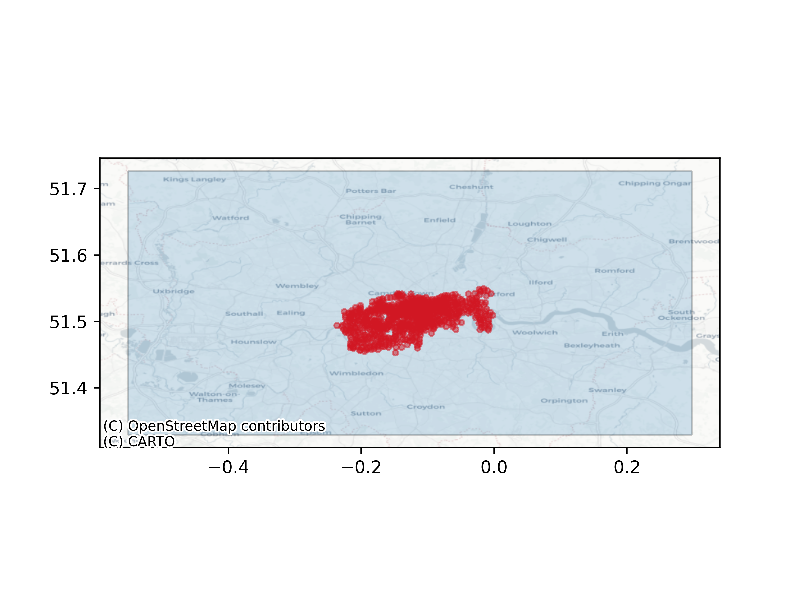

Measuring Travel Time to Public Bike Charging Stations in London.
Routing with r5py.
Introduction
This notebook presents an approach to optimising the location of new public bike stations in London. This method calculates travel times from actual station locations provided by Tfl BikePoint API. Routing is done with r5py, a python wrapper that exposes the performant multi-modal transport modelling capabilities of the open Java library r5.
Avoiding Edge Effects
In this analysis, a point plane is produced across London. This plane is used in the calculation of travel times. Travel times are from every bike location to every point in the point plane. Adding more points to this plane increases the number of calculations required, but it is important to use a large enough point plane in order to avoid edge effects.
Edge effects in this context would be caused by points close to the boundary of the area of interest reporting a higher median travel time due to a lack of bike stations located outside of that boundary.
In summary, if the point plane were not significantly larger than the extent of the station locations, points nearby to the boundary of the commutable area would be significantly disadvantaged.
The simple plot of the point plane’s extent (in blue) and the station locations (in red) confirms that the plane’s size is large enough to avoid edge effects in this analysis.

Station Locations
The station locations are densely located around the central London area. To get an intuitive understanding of station concentration, locations can be aggregated within 500 metre wide hexagons geometries, as in the map below. The colour and height of the hexagons relate to the number of stations present in each hexagon.
Inspecting this map, you will find that the highest concentration of charging stations are on the South Bank of the Thames at the intersection of Waterloo Bridge and Stamford Street.
Mouse controls:
- Scroll up and down to control the zoom.
- Shift + click + drag to pitch or yaw the view.
- Hover for aggregated station counts by 500m width hexagon.
Points Served By Stations
In this section, the points of the point plane are coloured by the median travel time taken by bike from every charging station within a 30 minute ride. The routing method takes account of the public road network, including pedestrianised zones, one-way streets and incline. It should be stated that the cycle network is provided by an open source supplier BBBike. This data asset is community-maintained and as such, the accuracy of the network should be more thoroughly assessed prior to making policy decisions based on this analysis.
Points in the plane that were not reachable within 30 minutes appear red. Points with a lower median travel time are coloured white. The pink zone within the red points represents the effective extent that can be reached by the average cyclist within a 30 minute cycle from any of the station locations.
Zooming into the interactive map, you may notice that some points are larger than others. Larger points are reachable by more stations within a 30 minute ride. This map illustrates the areas in London that are best-served by the public bike network.
Note that the point plane is naive to the locations of places that people may wish to start or finish their journeys. The current approach could be easily adapted to use locations of overnight population, commercial areas or any other geolocatable feature of interest.
Note that some of the locations within the point plane were adjusted by a built-in r5py algorithm during the travel time computation. This was also not successful in some cases. The reason for this is that some points happen to fall in inaccessible parts of the transport network, such as within private roads or within the Thames. A more robust method of reporting the travel time for these areas would be to snap the location to the nearest public road within the transport network and add a travel time penalty to this centroid’s travel time. For areas in truly inaccessible areas such as waterways, land use spatial data can be used to determine points falling within water. Points determined to meet this condition should be removed from the analysis.
Isolated Points Within Commutable Distance of Network
The above map can be simplified to provide the most remote locations within the reachable area by 30 minute bike ride. Considering adding stations to these locations would increase the coverage of the public bike network. However, once more note that due to the naive locations of the point plane, these locations are not optimised for utility. Adjusting the station location to the nearest point of interest adjacent to the remote points would be recommended.
Below are the 20 most isolated points within the 30 minute cyclable area. Isolated here is defined as the greatest median travel time from any bike station.
A useful tool for the non-technical user would be perhaps a Shiny or Streamlit application that allowed the user to select n points with the greatest median travel time. If recalculation of the transport network was implemented, the Java dependencies would mean serving the dashboard from a Docker container.
The ability to model counterfactuals such as adding new station locations into the network and recalculating the effect on travel times would also be of interest. Alternative methods of constrained network optimisation and clustering can also be explored in order to maximise coverage of the cycle network while minimising cost.